文字
背景
行間


SSH活動報告
SSH通信No.38
SSH通信No.38を発行しました。
内容はSSH講座「気付く・探る・考える」とパソコン甲子園２０２４プログラミング部門成績優秀証についてです。
下の画像をクリックすると見ることができます。
ぜひご覧ください。
過去のSSH通信一覧は以下のリンクからご覧ください。
https://cms2.chiba-c.ed.jp/sakura-h/17872fd488f90b7aed8eec4572b51f71/SSH%E9%80%9A%E4%BF%A1
第27回数理科学コンクール表彰式
11月3日(土)に千葉大学で第27回数理科学コンクールの表彰式が行われました。
数理科学コンクールとは、千葉大学先進科学センター主催で水の惑星にどんな波が起こるか？丈夫な家に柱は何本必要か？など、現象を物理や数学を使って解明するコンクールです。
1～3名のチーム戦で、実験や模型作りで試すなど、自由な発想で楽しみながら挑戦していきます。
本校からは課題の部で以下の7チーム15名の生徒が銀欅賞を受賞しました。
理数科1年 加藤 結⽻・落合 謠惠
理数科1年 板橋 祥 ・⾕岡 耀
理数科2年 ヘワティラカ ヒルキ・東⾵平 萌絵
理数科2年 ⼩島 星司・関弥 建伸
理数科2年 三代川 彪・平澤 駿汰
理数科2年 福⽥ 琥太郎・鈴⽊ 翔太・⽵味 真俐
普通科3年 坂井 ひかり・1年 佐藤 瑠泉
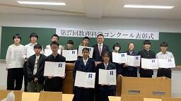 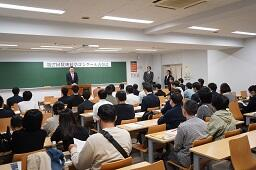
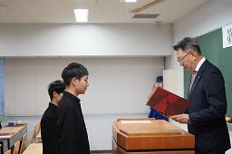
受賞者一覧は以下のリンクからご覧ください。
https://www.cfs.chiba-u.ac.jp/events/math/2024/R06_list.pdf
数理科学コンクールの詳細は以下のリンクからご覧ください。
https://www.cfs.chiba-u.ac.jp/events/math/outline.html
第27回数理科学コンクール課題の部の参加の様子は以下のリンクからご覧ください。
SSH通信No.37
SSH通信No.37を発行しました。
内容は第18回高校生理科研究発表会についてです。
下の画像をクリックすると見ることができます。
ぜひご覧ください。
過去のSSH通信一覧は以下のリンクからご覧ください。
https://cms2.chiba-c.ed.jp/sakura-h/17872fd488f90b7aed8eec4572b51f71/SSH%E9%80%9A%E4%BF%A1
佐倉アクティブ「多面体の数学的性質とゾムツールを用いた多面体作成実習」R6第2回
佐倉アクティブ「多面体の数学的性質とゾムツールを用いた多面体作成実習」第2回が開講されました。
第1回に続き、東邦大学理学部情報科学科教授の並木誠先生に講師をしていただきました。
1、2年生対象で11月3日(日)に東邦大学で開講され、普通科2年生1名、理数科1年生10名の計11名が参加しました。
ゾムツールとは、棒状のパーツと球状のパーツを組み合わせて立体物を構築する玩具のことです。
講座前半はまずゾムツールを使って4次元立方体(超立方体)の作成実習を行いました。
0次元からだんだん次元を上げていき、紙に書いた3次元立方体のように、3次元に投影した4次元の立方体を2通り完成させることができました。
次に、ひし形多面体の作成実習を行いました。
ひし形六面体とひし形十二面体は各自で完成させ、その後2人1組で協力して、ひし形二十面体とひし形三十面体を完成させました。
講座後半は半正多面体の作成実習を行いました。
半正多面体とは、面が2種類以上の正多角形からなり、どの頂点も同じ形をしている多面体のことです。
正三角形と正五角形の組み合わせで辺が60本の半正多面体や、正方形と正六角形と正十角形の組み合わせで辺が180本の半正多面体など、複数人で協力して複雑な半正多面体を作成することができました。
ゾムツールでは作成不可能な半正多面体も存在し、それらはGEOMAGという玩具を使って作成しました。
最後に、今後学校や家でチャレンジするための問題を与えられ、講座が終了しました。
終了後は校舎内の施設見学をさせてもらい、キャンパス内も散策してから解散となりました。
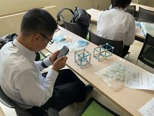
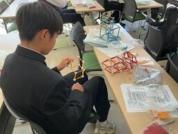 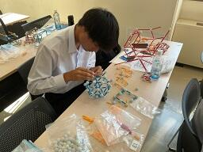
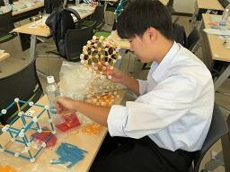 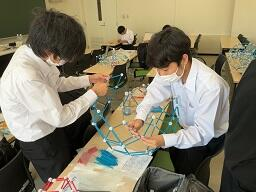

佐倉アクティブ一覧は以下のリンクからご覧ください。
https://cms2.chiba-c.ed.jp/sakura-h/17872fd488f90b7aed8eec4572b51f71/%E4%BD%90%E5%80%89%E3%82%A2%E3%82%AF%E3%83%86%E3%82%A3%E3%83%96
佐倉アクティブ「多面体の数学的性質とゾムツールを用いた多面体作成実習」R6第1回
佐倉アクティブ「多面体の数学的性質とゾムツールを用いた多面体作成実習」第1回が開講されました。
東邦大学理学部情報科学科教授の並木誠先生に講師をしていただきました。
1、2年生対象で11月2日(土)に本校多目的室1で開講され、普通科2年生1名、理数科1年生10名の計11名が参加しました。
ゾムツールとは、棒状のパーツと球状のパーツを組み合わせて立体物を構築する玩具のことです。
前半は多面体の数学的性質と展開図に関する講義を受けました。
ひし形だけでできた多面体や、四角形・六角形・八角形の組合せでできた多面体などの存在には驚きましたが、さらにそれらの多面体の展開図は頭の中では想像しきれない難しいものでした。
多面体から展開図を作るための条件や、展開図に関する未解決問題についても考えさせられました。
その後、回転する多面体の作成実習を行いました。
展開図が描かれた紙を切り貼りしていくと、ある文字列ができあがるように永久に回転させられる立体図形が完成しました。
後半はゾムツールを使って多面体の数学的性質について考察しました。
翌日行われる講座第2回の準備のために、基本的な多角形や多面体を作成し、正多面体を切断したときの断面の形状や、オイラーの多面体定理が成り立っていることを確認しました。
「多面体の数学的性質とゾムツールを用いた多面体作成実習」第2回は11月3日(日)に東邦大学で開講されます。
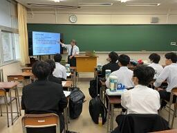 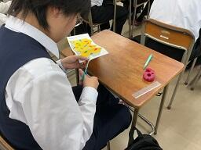
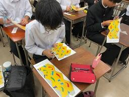 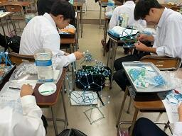
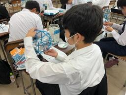 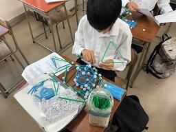
佐倉アクティブ一覧は以下のリンクからご覧ください。
https://cms2.chiba-c.ed.jp/sakura-h/17872fd488f90b7aed8eec4572b51f71/%E4%BD%90%E5%80%89%E3%82%A2%E3%82%AF%E3%83%86%E3%82%A3%E3%83%96
SSH特別講座「気付く・探る・考える」
10月22日(火)６・７限に本校体育館でSSH特別講座「気付く・探る・考える」が開講されました。
この講座は普通科・理数科１年生全員を対象にして毎年実施されていて、今年度の講師は
環境省 大臣官房秘書課 課長補佐 安藤 祐樹 さん
でした。
安藤祐樹さんは2014年に環境省へ入省し、本省での勤務や阿寒摩周国立公園での勤務、沖縄のやんばる地域での勤務を経験されています。
その経験を生かし、「環境省レンジャーのお仕事」というテーマで、フィールドワークのあり方や動植物との向き合い方について講演していただきました。
講演会には県立千葉中学校の教員や、千葉県総合教育センターの指導主事にも参加していただきました。
講演内容は大きく分けて、以下の4つでした。
・環境省の組織や仕事について
・阿寒湖自然保護官事務所での仕事について
・世界遺産について
・やんばる自然保護官事務所での仕事について
北海道や沖縄の写真をたくさん使ったスライドで、動植物をどうやって保護していくか、その地域の住民との関わりやどう連携をしていくかなど、おもしろい内容ばかりでした。
安藤祐樹さんは沖縄でやんばる国立公園の世界自然遺産の登録手続きに携わっていたこともあり、世界遺産に関する内容は特に生徒が興味を持って聴いていました。
質疑応答の時間には普通科・理数科問わず、多くの生徒から質問が出ました。
生徒アンケートの分析からは、講演会を通して、自分が住む地域や世界の一員として、何ができるか考えられる力が一番向上したという結果が得られました。
また、講演会以前は環境省の仕事内容について、デスクワークや会議が多そうという漠然としたイメージしか持っていなかったが、実はフィールドワークもたくさんあり、アクティブな仕事であると、イメージが一新されたようでした。
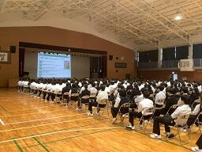 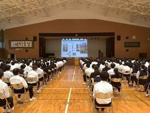
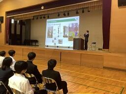 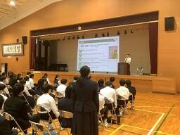
パソコン甲子園2024プログラミング部門予選成績優秀証
パソコン甲子園2024プログラミング部門予選で２名成績優秀証を取得しました。
パソコン甲子園は会津大学や福島県、全国高等学校パソコンコンクール実行委員会が主催し、文部科学省やデジタル庁などが後援していて、様々な有名企業が協賛しています。
全国の高校生、高等専門学校生等が、情報処理技術における優れたアイデアと表現力、プログラミング能力等を競い合うことにより、生徒自身のスキルアップを図るとともに、情報化社会を支える人材の裾野を広げることを目的としています。
プログラミング部門はペアで参加する大会で、9月16日(月・祝)に開催され、参加したのは理数科2年生チーム、普通科2年生チーム、普通科1年生チームの3チーム、計6名です。
予選は3時間の個人戦で、学校からオンラインで参加しました。
予選の結果、個人で
普通科2年生の柏木陸翔くん、理数科2年生の平澤駿汰くん
の２名が成績優秀証を取得しました。
成績優秀証は会津大学入学者選抜で学校推薦型選抜の出願資格を有することを証するものです。
大会の詳細は以下のリンクからご覧ください。
SSH通信No.36
SSH通信No.36を発行しました。
内容は佐倉アクティブ「データサイエンス入門」についてです。
下の画像をクリックすると見ることができます。
ぜひご覧ください。
過去のSSH通信一覧は以下のリンクからご覧ください。
https://cms2.chiba-c.ed.jp/sakura-h/17872fd488f90b7aed8eec4572b51f71/SSH%E9%80%9A%E4%BF%A1
第18回高校生理科研究発表会
9月28日(土)に理数科生徒が高校生理科研究発表会でポスター発表をしました。
高校生理科研究発表会とは、毎年この時期に千葉大学が主催する発表会です。
全国の高校生を対象に、日頃から課題研究活動等で行っている自然科学分野の研究成果を発表する機会を設け、優れた発表を表彰して奨励し、個々の研究内容にアドバイスを与えることで、広く自然科学教育の向上と充実を図ることを目的としています。
発表したのは理数科2年生40名で、理数科1年生40名も見学枠で参加しました。
10月2日(水)には受賞者が発表され、本校からは
物理「弾性衝突でない、回転するボールの跳ね返りについて」
渡邉考太朗・秋本丈太・吉野智貴
生物「ヤブガラシにおける巻きひげと反旋点の特性」
鈴木翔太・竹味真俐・福田 琥太郎
数学「角の二等分線の交点の凸包と正多角形～任意の多角形は正多角形に近づく～」
平澤駿汰・三代川彪
の3件で優秀賞を受賞しました。
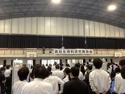 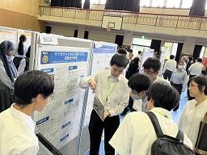
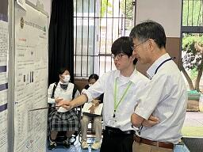 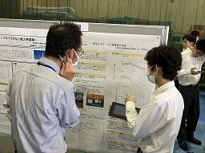
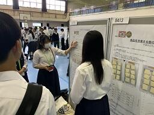 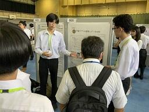
受賞者一覧は以下のリンクからご覧ください。
https://www.cfs.chiba-u.jp/koudai-renkei/event/history/2024/18jushou.pdf
高校生理科研究発表会の詳細は以下のリンクからご覧ください。
https://www.cfs.chiba-u.jp/koudai-renkei/event/
発表した研究のテーマ一覧は以下のリンクからご覧ください。
https://cms2.chiba-c.ed.jp/sakura-h/wysiwyg/file/download/104/5901
SSH通信No.35
SSH通信No.35を発行しました。
内容はSSHサイエンスツアー野外実習(内浦山県民の森)についてです。
下の画像をクリックすると見ることができます。
ぜひご覧ください。
過去のSSH通信一覧は以下のリンクからご覧ください。
https://cms2.chiba-c.ed.jp/sakura-h/17872fd488f90b7aed8eec4572b51f71/SSH%E9%80%9A%E4%BF%A1
令和6年度SS探究Ⅰ研究テーマ一覧
今年度の理数科2年生の課題研究テーマ一覧を掲載しました。
理数科の2年生は週に2時間、SS探究Ⅰの授業で課題研究を行っています。
分野は物理・化学・生物・地学・数学・情報など、多岐にわたり、日々実験や考察などを繰り返しています。
研究テーマ一覧は以下のリンクからご覧ください。
https://cms2.chiba-c.ed.jp/sakura-h/wysiwyg/file/download/104/5901
SSH通信No.34
SSH通信No.34を発行しました。
内容はサイエンスカフェ2024と、理数科進学フェア2024～理数科で学ぼう！～ についてです。
下の画像をクリックすると見ることができます。
ぜひご覧ください。
過去のSSH通信一覧は以下のリンクからご覧ください。
https://cms2.chiba-c.ed.jp/sakura-h/17872fd488f90b7aed8eec4572b51f71/SSH%E9%80%9A%E4%BF%A1
第18回高校生理科研究発表会の準備
明日開催される第18回高校生理科研究発表会の準備をしています。
高校生理科研究発表会とは、毎年この時期に千葉大学が主催する発表会です。
全国の高校生を対象に、日頃から課題研究活動等で行っている自然科学分野の研究成果を発表する機会を設け、優れた発表を表彰して奨励し、個々の研究内容にアドバイスを与えることで、広く自然科学教育の向上と充実を図ることを目的としています。
発表するのは理数科2年生40名で、理数科1年生40名も見学枠で参加します。
今日は発表前日で、各班で作成し印刷したポスターを使って、最後の発表練習やQ&A想定集の作成などを行いました。
発表する研究のテーマ一覧は後日学校ホームページに掲載します。
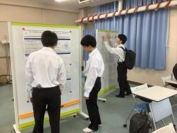 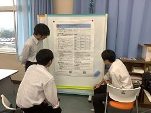
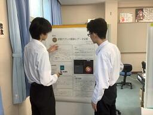 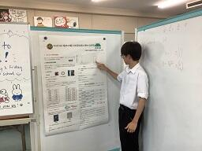
SSH通信No.33
SSH通信No.33を発行しました。
内容は令和6年度SSH生徒研究発表会についてです。
下の画像をクリックすると見ることができます。
ぜひご覧ください。
過去のSSH通信一覧は以下のリンクからご覧ください。
https://cms2.chiba-c.ed.jp/sakura-h/17872fd488f90b7aed8eec4572b51f71/SSH%E9%80%9A%E4%BF%A1
SSH通信No.32
SSH通信No.32を発行しました。
内容は佐倉アクティブ「植物の成分を精製してみよう！」と第27回数理科学コンクール課題の部についてです。
下の画像をクリックすると見ることができます。
ぜひご覧ください。
過去のSSH通信一覧は以下のリンクからご覧ください。
https://cms2.chiba-c.ed.jp/sakura-h/17872fd488f90b7aed8eec4572b51f71/SSH%E9%80%9A%E4%BF%A1
パソコン甲子園2024プログラミング部門
9月16日(月・祝)に生徒がパソコン甲子園2024プログラミング部門予選に参加しました。
パソコン甲子園は会津大学や福島県、全国高等学校パソコンコンクール実行委員会が主催し、文部科学省やデジタル庁などが後援していて、様々な有名企業が協賛しています。
全国の高校生、高等専門学校生等が、情報処理技術における優れたアイデアと表現力、プログラミング能力等を競い合うことにより、生徒自身のスキルアップを図るとともに、情報化社会を支える人材の裾野を広げることを目的としています。
プログラミング部門はペアで参加する大会で、参加したのは理数科2年生チーム、普通科2年生チーム、普通科1年生チームの3チーム、計6名です。
予選は3時間の個人戦で、学校からオンラインで参加しました。
各生徒は出題された問題に対する解答プログラムを考案・作成し、規定の競技環境で実行し、解答を提出しました。
予選の結果は9月24日(火)に発表される予定です。
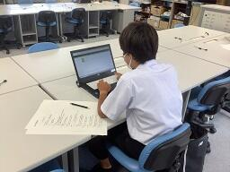 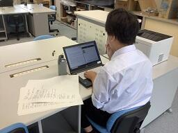
大会の詳細は以下のリンクからご覧ください。
SSH通信No.31
SSH通信No.31を発行しました。
内容は佐倉藩サイエンスフェスティバルと第24回日本情報オリンピックの指定校についてです。
下の画像をクリックすると見ることができます。
ぜひご覧ください。
過去のSSH通信一覧は以下のリンクからご覧ください。
https://cms2.chiba-c.ed.jp/sakura-h/17872fd488f90b7aed8eec4572b51f71/SSH%E9%80%9A%E4%BF%A1
SSHサイエンスツアー野外実習(内浦山県民の森)
千葉県鴨川市の内浦山県民の森でサイエンスツアー野外実習を実施しました。
サイエンスツアーは８月２５日（日）～８月２７日（火）の２泊３日で実施され、１年生理数科３８名・普通科３名、２年生理数科１名の計４２名が参加しました。
１日目は佐倉高校から内浦山県民の森まで移動後、斜面林に入り、班ごとに森林調査実習を行いました。１辺が7ｍのコドラートを作成し、コドラート内の樹木に番号をつけ、位置（座標）、樹種、樹高、胸高直径などを測定しました。また、平らな岩盤でできた川底を観察し、その成因を考察しました。午後は、急斜面を登ってモミ遺存林を観察しました。そこに行かないと見られない実物に触れることは、大変貴重な経験となりました。夕食後の学習会では、森林調査実習の結果を樹冠投影図や植生断面図として、班ごとに模造紙にまとめました。
２日目の午前は地学実習で、奥谷林道を妙法生寺まで歩きながら、林道沿いの露頭で三浦層群天津層の地層観察を行いました。堆積構造や断層を観察・スケッチするとともに、地層の傾斜と露頭の湿り具合の関係などを考察しました。昼食は妙法生寺の境内を利用させていただきました。午後は生物実習で、ブナ科、クスノキ科、ツバキ科、トウダイグサ科などの植物について、葉の特徴を捉えながら観察を行いました。夕食後の地学分野の学習会では、日本列島や千葉県の成り立ちについて学習しました。その後は午後の生物実習をもとにして、葉から植物の種類を判断する「葉っぱテスト」が行われました。
３日目は台風が接近していることを考え、県立中央博物館分館 海の博物館とその周辺で実習を行いました。一人ひとりテーマを決めて博物館の見学を行いましたが、勝浦海中公園展望塔まで足を延ばした生徒もいました。昼食後は海岸に出て、イボニシや海水を用いた実験を行い、ボラの鼻にある黒滝不整合を対岸から観察しました。
台風の接近を考慮し、見学地を変更してのサイエンスツアーとなりましたが、行動中の雨やマダニ・ヤマビルの被害もなく、本物に触れる充実した野外実習となりました。
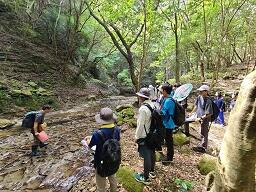 
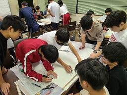
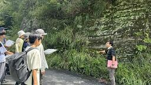
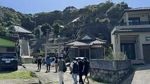
理数科進学フェア2024～理数科で学ぼう！～
8月24日(土)に高校理数科進学フェア～理数科で学ぼう！～が開催されました。
中学校1～3年生やその保護者が対象で、千葉工業大学津田沼キャンパス6号館にて開催されました。
・千葉県内の理数科を設置する公立高校の高校生や教員からの説明と疑問解決
・各高校の楽しい科学実験の体験コーナー
・課題研究のポスター展示
・千葉工業大学実験コーナー
・スーパーサイエンスハイスクール校の説明
など、様々な企画が用意されました。
この日は科学の甲子園ジュニアも同会場で行われていたので、そこに参加していた中学生も進学フェアに来場し、とても活気のあるイベントになりました。
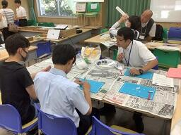 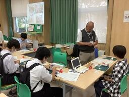
詳しくは以下のポスターをご覧ください。
サイエンスカフェ2024
テルモ生命科学振興財団とTWInsのサイエンスカフェ2024に参加しました。
参加したのは理数科の2年生2名です。
今年度は8月9日(金)～8月10日(土)の1泊2日で、ホテルグランドヒル市ヶ谷とTWInsで開催されました。
サイエンスカフェとは、テルモ生命科学振興財団とTWInsの共催で、2012年から全国SSH校などの高校生約30名が招待され、最先端の生命科学にふれることができるプログラムです。
1日目は若手研究者とのディスカッションや最先端の生命科学の講義があり、夕方からは懇親会が行われ、様々な学校の生徒たちと交流することができました。
2日目はTWInsに移動し、3つの実習や討論などが行われ、夕方に修了証が授与されて解散しました。
学校では体験できない企画ばかりで、様々な分野の視点から最先端の研究にふれることができる貴重な機会となりました。
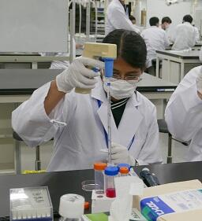 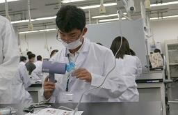
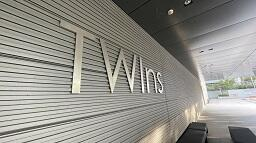
サイエンスカフェについての詳細は以下のリンクからご覧ください。
佐倉アクティブ「データサイエンス入門」
8月23日(金)に佐倉アクティブ「データサイエンス入門」が行われました。
この講座は、総合コンサルタント企業アクセンチュア株式会社の社会貢献プロジェクトとNPO法人企業教育研究会、
NPO法人STEM Leadersの運営で開講されました。
参加したのは1・2年生の普通科27名、理数科13名、成田高校の生徒3名の計43名です。
成田高校、県立船橋高校、栄町立栄中学校の教員も講座の見学に来ました。
内容は43名を3つのパークに分け、パークごとにフード・商品・イベントの3つの部門に分かれ、データを分析しながら遊園地の再建計画を練るというものでした。
夏休み直前に事前学習会として、企業の説明や講座の概要の動画を視聴し、事前学習資料を用いて予習を行いました。
さらに、グループ分け・自己紹介・役割分担・パーク名決め・その他コミュニケーションをとり、グループワークしやすい状況を整えていました。
講座の1時間目は復習として講座の概要や伸ばしたい能力などを確認し、個人作業として遊園地の各課題の要因仮説の優先度付けを行いました。
複数の仮説の中から個々に優先度の高い3つを選び、理由も踏まえてグループで共有して5つに絞り込みました。
2時間目は検証方法の設定を行いました。
様々なグラフの特長についてレクチャーを受け、グループで選んだ各仮説に対して2つずつ用意されたグラフのどちらが分析に適しているのか、個々で考え、グループで共有し、分析の材料を揃えました。
この時間の最後にはパークを跨って、同じ部門の班で集まって発表も行いました。
3時間目はデータの読み取りと施策の選択を行いました。
グループごとに分担してグラフの読み取りを行い、ファミリー層・社会人シングル層・学生層など、どの層向けにどのような施策を用意すべきなのかを話し合いました。
ここからはパーク内であれば他の部門と情報共有をしてもよいので、パーク全体としての方向性を定め、売り上げを向上させられるように議論していきました。
4時間目は分析・考察結果を合わせて、パークごとに提案施策を発表しました。
グループごとに発表前の確認や準備を行い、論理的にプレゼンを組み立て、パークの枠を越えて部門ごとに発表を行いました。
客層や客単価、非日常性、レストランやショップの利用率、性別や世代ごとの客が求める要素など、たくさんの項目を客観的に考えた上でプレゼンすることができました。
それぞれの施策について質問する時間も設けられ、着目したポイントや理由についてさらに議論が行われました。
講座の最後にどちらのパークがより売り上げを伸ばすことができたのか、シミュレーションの結果発表があり、どの選択や議論に差が出る要因があったのかも発表されました。
アンケートの結果からは、今回の講座を通して、特に問いを見出す力や、正確に情報を収集する力が身についたことが分かりました。
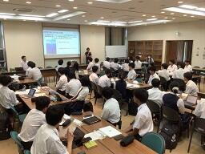 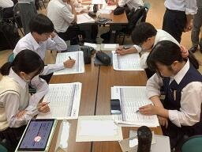
アクセンチュア株式会社については以下のリンクからご覧ください。
理数科進学フェア～理数科で学ぼう！～再告知
明日8月24日(土)に高校理数科進学フェア～理数科で学ぼう！～が開催されます。
中学校1～3年生やその保護者が対象で、千葉工業大学津田沼キャンパス6号館にて開催されます。
・千葉県内の理数科を設置する公立高校の高校生や教員からの説明と疑問解決
・各高校の楽しい科学実験の体験コーナー
・課題研究のポスター展示
・千葉工業大学実験コーナー
・スーパーサイエンスハイスクール校の説明
など、様々な企画が用意されていますので、ぜひ参加してください。
詳しくは以下のポスターをご覧ください。

令和6年度SSH生徒研究発表会
8/6(火)～8/8(木)のSSH生徒研究発表会に参加しました。
この発表会は文部科学省と国立研究開発法人科学技術振興機構(JST)の主催で、全国のSSH指定校等の生徒が日頃の研究成果を発表し、生徒の科学技術に対する興味・関心を一層喚起するとともに、SSHの成果を広く発信することを目的としています。
会場は神戸国際展示場で、参加したのは理数科の3年生2名、2年生1名です。
1日目は現地への移動・発表準備日で、2日目はポスター発表、3日目は代表校による全体発表や表彰式でした。
本校は生物B(植物・農学系)の分野で

https://www.mext.go.jp/b_menu/houdou/r6sshssf_00001.html
第27回数理科学コンクール課題の部
集めたデータをどう処理するかなど、各グループ作戦を立てるところから始まりました。
千葉大学の先生や学生さんとも一緒に実験することができ、貴重な体験をすることができました。
8月24日(日)には人工知能の部も開催され、本校からは7名出場予定です。
コンクールの結果は秋～冬頃に発表される予定ですので、後日お知らせします。
第24回日本情報オリンピックの指定校
本校が第24回日本情報オリンピックの指定校に認定されました。

日本情報オリンピックとは高等学校2年生までの競技プログラマー日本一を決める大会で、国際情報オリンピック2025ボリビア大会へ派遣する日本代表選手選考会も兼ねています。
競技はオンラインで実施され、予選はC・Java・Python・Rubyなど、様々な言語が対応していますが、本選以降はC++のみ使用可能となっています。
第24回日本情報オリンピックの指定校の要件に達しましたので、本校は今年度の指定校として認定されました。
第24回日本情報オリンピックの指定校一覧は以下のリンクからご覧ください。
https://www.ioi-jp.org/joi/2024/shiteikou
その他情報オリンピック関連の情報は以下のリンクからご覧ください。
https://www.ioi-jp.org/
7月24日(水)に佐倉アクティブ「植物の成分を精製してみよう！」
7月24日(水)に佐倉アクティブ「植物の成分を精製してみよう！」が開講されました。
令和６年７月２４日（水）の午後、佐倉市の株式会社常磐植物化学研究所において「植物の成分を精製してみよう！」をテーマに佐倉アクティブSSH講座が開催されました。１年生１５名（普通科９名、理数科６名）、２年生普通科２名の計１７名が参加し、実習、ハーブ園研修、施設見学を行いました。
実習では、「目の疲れ」や「視力改善」に効果があるとされているカシスの抽出液から、含まれているアントシアニンをカラムクロマトグラフィーにより分離し、薄層クロマトグラフィーの多点打ちの手法を用いて、含まれている４種類の色素の分離・確認を行いました。
ハーブ園では、抗酸化作用があり、目に良いとされるブルーベリーや天然甘味料として知られ砂糖よりも低カロリーであるステビア、料理や精油として利用されているバジルなどに触れたり、においや味を確認しながら研修しました。
施設見学では、実習で行った手法が実際にはどのような規模で行われているかの説明を受けました。午後の４時間ほどの講座でしたが、とても充実した講座になりました。


理数科進学フェア～理数科で学ぼう！～告知
8月24日(土)に高校理数科進学フェア～理数科で学ぼう！～が開催されます。
中学校1～3年生やその保護者が対象で、千葉工業大学津田沼キャンパス6号館にて開催されます。
・千葉県内の理数科を設置する公立高校の高校生や教員からの説明と疑問解決
・各高校の楽しい科学実験の体験コーナー
・課題研究のポスター展示
・千葉工業大学実験コーナー
・スーパーサイエンスハイスクール校の説明
など、様々な企画が用意されていますので、ぜひ参加してください。
詳しくは以下のポスターをご覧ください。
佐倉藩サイエンスフェスティバル
「佐倉藩サイエンスフェスティバル」を開催しました。
７月３０日（火）、本校SSH第Ⅲ期の新しい取組の１つ、「佐倉藩サイエンスフェスティバル」を開催しました。今年度は試行として、佐倉市内の中学生と保護者を対象に、本校の電気部、化学部、生物部および天文気象部の生徒が次のような実験ブースを開きました。
化学部：カラフル人工いくらづくり
生物部：ぱくぱくしじみ釣り
電気部：人工知能体験
天文気象部：がんがん岩塩ぺりぺり黒雲母
当日は、中学生、保護者、中学校の先生合わせて、５０名の方が来校されました。来校者はそれぞれのブースを自由に回り、実験・観察を体験しました。その他、本校SSH事業の紹介や、本校所蔵の標本や実験器具の展示を行いました。
来年度以降は、他の高校・大学・企業や、中学校の科学部等にも実験ブースの出展を呼びかけ、小学生や一般市民を対象とした「佐倉藩サイエンスフェスティバル」を開催したいと思います。どうぞご期待ください。


SSH通信No.30
SSH通信No.30を発行しました。
内容は令和6年度理数科課題研究発表会についてです。
下の画像をクリックすると見ることができます。
ぜひご覧ください。
過去のSSH通信一覧は以下のリンクからご覧ください。
https://cms2.chiba-c.ed.jp/sakura-h/17872fd488f90b7aed8eec4572b51f71/SSH%E9%80%9A%E4%BF%A1
令和6年度理数科課題研究発表会
7月9日(火)に令和6年度理数科課題研究発表会が開催されました。
発表したのは理数科3年生41名で、本校の地域交流施設研修室で開催されました。
午前は理数科2年生、午後は理数科1年生が参加し、3年生の発表に対して質問や評価を行い、SSHコーディネーターの花輪先生には全ての発表を通してコメントや評価をしていただきました。
発表時間は各班6分、質疑応答や評価が3分、入れ替えで2分で、1班あたり11分のサイクルで実施しました。
10:45～13:30は校内のみの発表会で、10班が発表しました。
13:50～16:00はたくさんの参加者をお招きして、8班が対面とオンラインのハイブリッド形式での発表をしました。
対面では本校のSSH運営指導委員の先生方、オンラインでは教育委員会・大学・千葉県内の高校や中学校・全国のSSH校などからの参加があり、発表に対する質問やアドバイスもいただきました。
教員と一緒に高校生が参加している学校もあり、質疑応答では高校生同士での議論も繰り広げられました。
理数科3年生は現在それぞれの研究を論文にまとめていて、9月までに仕上げていきます。
さらに、それらの論文を要約し、すべての班の内容をまとめた論文集を後期に発行する予定です。


研究テーマ一覧は以下のリンクからご覧ください。
https://cms2.chiba-c.ed.jp/sakura-h/17872fd488f90b7aed8eec4572b51f71/%E8%AA%B2%E9%A1%8C%E7%A0%94%E7%A9%B6%E3%83%BBSS%E6%8E%A2%E7%A9%B6
SSH通信No.29
SSH通信No.29を発行しました。
内容は佐倉アクティブ「和算と算額の世界」についてです。
下の画像をクリックすると見ることができます。
ぜひご覧ください。
過去のSSH通信一覧は以下のリンクからご覧ください。
https://cms2.chiba-c.ed.jp/sakura-h/17872fd488f90b7aed8eec4572b51f71/SSH%E9%80%9A%E4%BF%A1
佐倉アクティブ「和算と算額の世界」
6月15日(土)に佐倉アクティブ「和算と算額の世界」が開講されました。
この講座は成田山の算額が奉納されている成田山霊光館で開講され、参加したのは普通科2年生2名、理数科1年生5名、2年生2名の計9名でした。
講座に興味をもってくれた成田高校の生徒も3名参加しました。
成田山霊光館学芸員の猪岡萌菜さんと、千葉大学大学院教育学研究科2年の三橋可奈さんに講師をしていただきました。
算額とは、江戸時代から特に発展してきた和算の文化で、おもしろい問題が作れたときの感謝の意を表すときや、
他の人への挑戦状を載せたいときなど、様々理由で神社仏閣に奉納された絵馬や額のことです。
この時代の庶民の遊びとしても親しまれてきたようです。
講座はまず最初に算額の調査を行い、問題文や内容、図形に関する議論を行いました。
文章が漢文で書かれているため、解読をしないと問題の内容が分からないので苦戦していましたが、
三橋さんの作成した和算用語資料と照らし合わせながら読み進めていきました。
その後霊光館の一室をお借りして、講義を行いました。
内容は、三橋さんからは和算や算額の文化について、猪岡さんからは和算が発展した時代の成田・佐倉やその周辺の状況についてでした。
和算やその背景について学習した後は、調査した算額の問題を、グループに分かれて解いていきました。
難易度の高い問題ばかりなので、解法を見つけるまでには至りませんでしたが、和算や算額に関する興味関心はより深まったようでした。
この活動にさらに興味を持った生徒は、今後も探究活動として和算について調査していくようです。
佐倉アクティブ一覧は以下のリンクからご覧ください。
SSH通信No.28
SSH通信No.28を発行しました。
内容はR6佐倉アクティブ一覧についてです。
下の画像をクリックすると見ることができます。
ぜひご覧ください。
過去のSSH通信一覧は以下のリンクからご覧ください。
https://cms2.chiba-c.ed.jp/sakura-h/17872fd488f90b7aed8eec4572b51f71/SSH%E9%80%9A%E4%BF%A1
サイエンスダイアログR6第1回
5月14日(火)6~7限にサイエンスダイアログが開講されました。
サイエンス・ダイアログとは、日本学術振興会(JSPS)が実施している「外国人特別研究員事業」を活用し、来日している外国人研究者(フェロー)を講師として招き、自身の研究や出身国に関する講義を英語で行うことにより、科学への興味・関心を高めるとともに、国際理解を深めるというものです。
東京大学大学院薬学系研究科のDr. Malawska Katarzyna Joannaさんを講師に迎え、薬学系の研究の進め方などのお話をしていただきました。
講座には理数科の1・2年生が参加しました。
高校生にとって難易度は高い内容でしたが、事前にいただいたキーワードリストなどを参考にしながら内容を把握し、質疑応答では学年問わず英語でたくさんの質問が飛び交っていました。
日本学術振興会のサイエンス・ダイアログについては、以下のリンクからご覧ください。
https://www.jsps.go.jp/j-sdialogue/
R6佐倉サイエンス1周目
今年度も佐倉サイエンスの授業で各分野の講座が始まりました。
生徒は年間で全分野を3周ずつ受けます。
下の写真は数学分野の講座の様子です。
今年度の数学分野の1周目は「Geogebra」を使ってみようという内容です。
「Geogebra」とは、関数グラフ・幾何・空間図形など、様々な機能を持つ図形描画アプリです。
生徒は各自の端末を利用して、放物線が動いたときの頂点の軌跡を描いたり、
空間上のグラフの切断面の観察を行って特徴を話し合ったりしました。
これまでの佐倉サイエンスの講座の資料や授業の様子は、以下のリンクからご覧ください。
https://cms2.chiba-c.ed.jp/sakura-h/17872fd488f90b7aed8eec4572b51f71/%E4%BD%90%E5%80%89%E3%82%B5%E3%82%A4%E3%82%A8%E3%83%B3%E3%82%B9
SSH通信No.27
SSH通信No.27を発行しました。
内容はスーパーサイエンスハイスクール（SSH）指定第Ⅲ期とSSH コーディネーター配置、SS 探究Ⅱ「論文作成オリエンテーション」についてです。
下の画像をクリックすると見ることができます。
ぜひご覧ください。
過去のSSH通信一覧は以下のリンクからご覧ください。
https://cms2.chiba-c.ed.jp/sakura-h/17872fd488f90b7aed8eec4572b51f71/SSH%E9%80%9A%E4%BF%A1
SS数学Ⅲ「トロコイド曲線」
SS数学Ⅲの授業でトロコイド曲線の考察を行いました。
SS数学Ⅲは理数科3年生の数学の授業で、週8時間設定されています。
今週は媒介変数表示や極方程式で表された曲線に関する授業をしており、その中で登場したサイクロイドという曲線の問題と併せて、トロコイドという曲線についても考察を行いました。
サイクロイドと似たような描き方をするが、どのように方程式の違いが表れるかなどを近くの人たちと議論しました。
また、 サイクロイドの方程式はそもそもどのように導かれるのか、なども考え、ベクトルの考え方を導入すると分かりやすくなることも学習しました。
SS探究Ⅱ「論文作成オリエンテーション」
理数科3年生向けに論文作成に関するオリエンテーションが行われました。
SS探究Ⅱの授業で課題研究の論文作成に関するオリエンテーションが行われました。
今年度から3年生の課題研究は週2時間に増えたため、実験を継続しながら論文を書いていく時間を十分にとることができるようになりました。
SSHコーディネーターの花輪先生から、論文を書く順序やグラフ作成時に気をつけることなどのお話をしていただきました。
後半の時間は研究班に分かれて、研究の結果を示すグラフを作成したり、花輪先生に研究の相談していました。
グラフをきれいに描くために、pythonを使って描こうとしている班もありました。
SSHコーディネーターについては以下のリンクから記事をご覧ください。
SS探究Ⅰ「課題研究オリエンテーション」
理数科2年生の課題研究が始まりました。
SS探究Ⅰの授業で課題研究のオリエンテーションが行われました。
課題研究は週に2時間行われます。
1時間目は授業担当者11名の紹介や、これからの研究スケジュールや研究発表会の予定を確認を行い、研究ノートの作成の仕方を学びました。
2時間目の前半はSSHコーディネーターの花輪先生から、改めて研究テーマ設定についてのお話をしていただきました。
後半は研究班ごとに話し合い、課題研究コンパスの書けそうな部分を記入していきました。
あと数回かけて研究の方針や実験方法などを検討していき、その後本格的に実験を行っていきます。
SSHコーディネーター配置
今年度から本校に週2回SSHコーディネーターの先生が来校します。
令和5年度から文部科学省により、SSH指定校や地域の探究・理数系教育の充実や、域内外の他校への成果普及、外部機関との連携を推進する「コーディネーター」の配置に係る支援が始まりました。
今年度1年間、SSHコーディネーターとして
が週2回来校され、課題研究についての指導・助言をくださることになりました。
詳しくは以下のリンクから、文部科学省の「令和6年度SSHコーディネーター配置機関について」をご覧ください。
 ライフイズテックレッスンコンテスト2023受賞
ライフイズテックレッスンコンテスト2023受賞
ライフイズテックレッスンコンテスト2023で生徒が敢闘賞を受賞しました。
ライフイズテックレッスンコンテストとは、授業を通じて学んだ問題解決の考え方と、それを解決するためのプログラミングスキルを駆使して、オリジナルWebサイトを制作するコンテストです。
「身の回りの問題解決部門」と「SDGs問題解決部門」があり、「自分の好きなものを、もっと多くの人に好きになって欲しい」「学校で調べたSDGsの問題を、日常のちょっとしたことから変えていきたい」など、自身のテーマに沿って制作していきます。
佐倉高校ではSS情報Ⅰの授業でWebサイトを制作し、意欲のある生徒がこのコンテストに参加しています。
2023冬の部で
理数科１年 岡本凌正くん が敢闘賞を受賞
しました。
コンテストの概要や結果は以下のリンクからご覧ください。
スーパーサイエンスハイスクール（SSH）指定校第Ⅲ期内定
3月13日(水)、文部科学省よりスーパーサイエンスハイスクール（SSH）指定校の内定を頂きました。
今年度までの第Ⅱ期（平成31年度～令和5年度）に引き続く第Ⅲ期であり、令和6年度から10年度までの5年間が指定期間となります。
研究開発課題は、『「ネオ佐倉アクティブ」と「佐倉藩サイエンスフェスティバル」を基盤とした、地域発のグローバル社会で活躍できるサイエンスリーダーの育成』です。
理数科と普通科が互いに高め合い、探究活動のさらなる充実を目指し、実践に励んでまいります。
令和6年度SSH内定校の一覧は以下のリンクから、文部科学省の
「スーパーサイエンスハイスクール（ＳＳＨ）
令和６年度「基礎枠」、「文理融合基礎枠」及び「科学技術人材育成重点枠」内定校」
のpdfでご覧ください。
https://www.mext.go.jp/content/20240302-kyoiku01-000034366_1.pdf
令和5年度SSH研究開発実施報告書
令和5年度のSSH研究開発実施報告書を掲載しました。
今年度本校のSSH事業運営にご協力いただいた皆様には感謝申し上げます。
ぜひ次年度の活動にもご協力ください。
研究開発実施報告書は以下の画像のリンクからご覧ください。
また、これまでの研究開発実施報告書一覧は以下のリンクからご覧ください。
 SSH通信No.26
SSH通信No.26
SSH通信No.26を発行しました。
内容はSSH講座「和算の歴史と整数や図形に関する問題の解法考察講座」とSSH講座「マイ分光器を作って光源の性質を調べよう」についてです。
下の画像をクリックすると見ることができます。
ぜひご覧ください。
過去のSSH通信一覧は以下のリンクからご覧ください。
https://cms2.chiba-c.ed.jp/sakura-h/17872fd488f90b7aed8eec4572b51f71/SSH%E9%80%9A%E4%BF%A1
 SSH通信No.25
SSH通信No.25
SSH通信No.25を発行しました。
内容は佐倉アクティブ「多面体の数学的性質とゾムツールを用いた多面体作成実習」についてです。
下の画像をクリックすると見ることができます。
ぜひご覧ください。
過去のSSH通信一覧は以下のリンクからご覧ください。
https://cms2.chiba-c.ed.jp/sakura-h/17872fd488f90b7aed8eec4572b51f71/SSH%E9%80%9A%E4%BF%A1
 SSH通信No.24
SSH通信No.24
SSH通信No.24を発行しました。
内容はSSH特別講義「気付く・探る・考える」と第26回数理科学コンクール表彰式についてです。
下の画像をクリックすると見ることができます。
ぜひご覧ください。
過去のSSH通信一覧は以下のリンクからご覧ください。
https://cms2.chiba-c.ed.jp/sakura-h/17872fd488f90b7aed8eec4572b51f71/SSH%E9%80%9A%E4%BF%A1
 SSH通信No.23
SSH通信No.23
SSH通信No.23を発行しました。
内容は佐倉サイエンス特別講義「研究テーマ設定と進め方」についてです。
下の画像をクリックすると見ることができます。
ぜひご覧ください。
過去のSSH通信一覧は以下のリンクからご覧ください。
https://cms2.chiba-c.ed.jp/sakura-h/17872fd488f90b7aed8eec4572b51f71/SSH%E9%80%9A%E4%BF%A1
第34回日本数学オリンピック(JMO)予選
第34回日本数学オリンピック(JMO)予選に5名の生徒が参加しました。
日本数学オリンピック (JMO：Japan Mathematical Olympiad) は、国際数学オリンピック (IMO : International Mathematical Olympiad) へ参加する日本代表選手を選ぶため、日本国内で行う数学コンテストです。
JMO には毎年多くの高校生・中学生が参加しています。
今年度は1月8日(月・祝)に開催され、本校からは1・2年生計5名の生徒が参加しました。
予選の結果は後日発表される予定です。
JMOの詳細は以下のリンクからご覧ください。
 SSH通信No.22
SSH通信No.22
SSH通信No.22を発行しました。
内容は第17回高校生理科研究発表会についてです。
下の画像をクリックすると見ることができます。
ぜひご覧ください。
過去のSSH通信一覧は以下のリンクからご覧ください。
https://cms2.chiba-c.ed.jp/sakura-h/17872fd488f90b7aed8eec4572b51f71/SSH%E9%80%9A%E4%BF%A1
日本情報オリンピック予選結果
日本情報オリンピック予選で14名が敢闘賞を受賞、1名本選進出、7名女性部門本選進出しました。
日本情報オリンピックとは高等学校2年生までの競技プログラマー日本一を決める大会で、国際情報オリンピック2023エジプト大会へ派遣する日本代表選手選考会も兼ねています。
競技はオンラインで実施され、予選はC・Java・Python・Rubyなど、様々な言語が対応していますが、本選以降はC++のみ使用可能となっています。
予選の結果、14名が敢闘賞を受賞しました。
2年 坂下知輝 宗政花欧里 川瀬瑠音 関佑梨
1年 関桃子 吉﨑朱俐 平澤駿汰 熱田瑞季 鮫島大河 吉野智貴 伊丹天太郎 岡本凌正 相原悠太 落合優貴美
このうち、坂下知輝くんは規定を満たしましたので、2月の本選に出場することが決まりました。
本選出場者一覧は以下のリンクからご覧ください。
https://www.ioi-jp.org/joi/2023/2024-joi-ho-list
また、 以下の7名は1月の女性部門本選に出場することが決まりました。
宗政花欧里 川瀬瑠音 関佑梨 関桃子 吉﨑朱俐 熱田瑞季 落合優貴美
女性部門本選の出場者一覧は以下のリンクからご覧ください。
https://www.ioi-jp.org/joig/2023/2024-joig-ho-list
その他情報オリンピック関連の情報は以下のリンクからご覧ください。
https://www.ioi-jp.org/